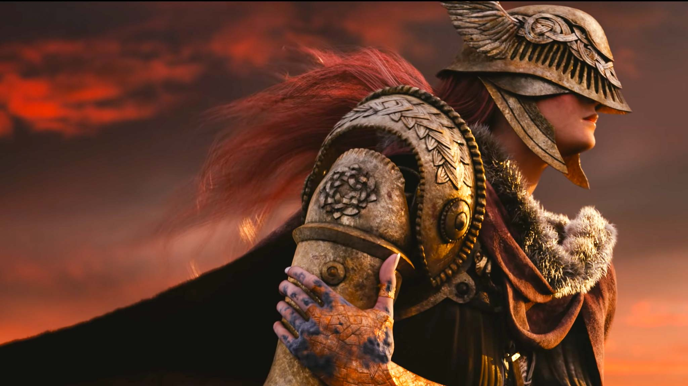

Considered the best boss in Elden Ring, Malenia, Sword of the Miquella. Malenia has a tough boss fight with fast movement and lifesteal while attacking, the hardest move to dodge is the Watterfall, as Malenia attacks spinning three times non-stop.
This is the second fase at Malenia, this is Malenia, Goddess of Rot
Mesmer the Impaler, new boss of the Elden Ring DLC (Shadow of the erdtree)
Along with Mesmer, Radhan, the promised consort, is a new head of the DLC.
Sobre nós
We are the Aneis Pristinos, a games store with more focus in Elden ring and Soulslikes.